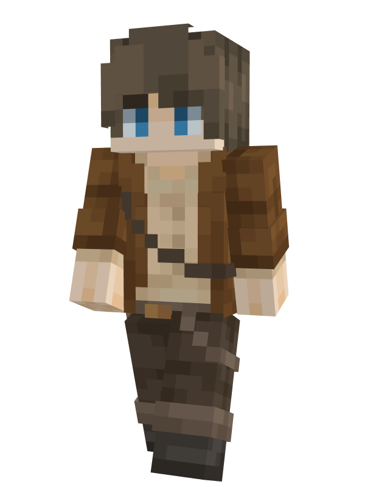
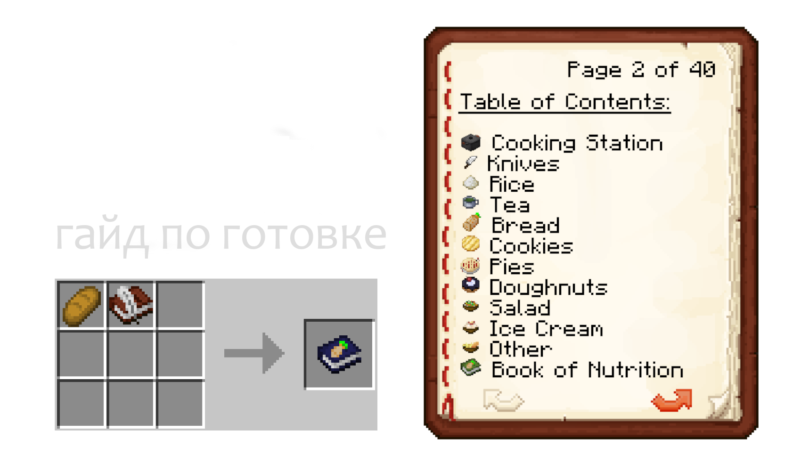
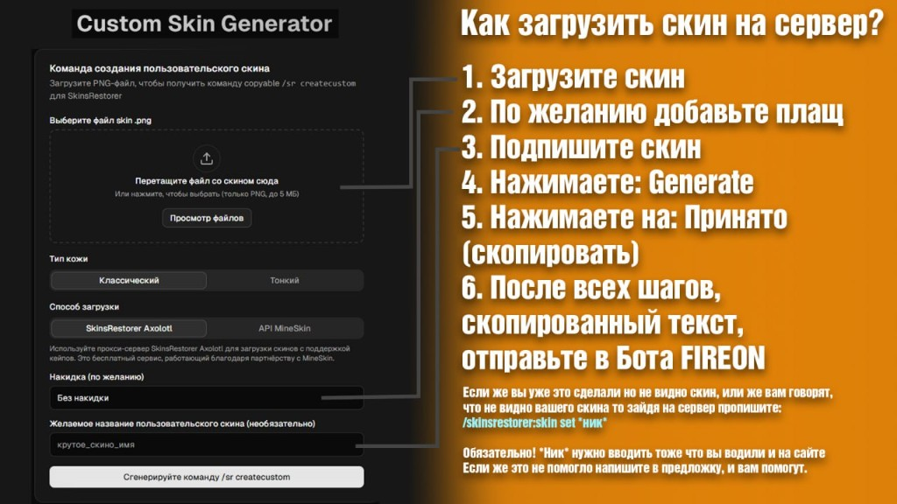

По вашему запросу правил не найдено.
Запрещено:
Играйте честно и уважайте других игроков!
На сервер добавлены оповещения о стримах. Чтобы получить эту возможность, отправьте в бота-предложку краткую анкету.
Пример заявки:
Особые статусы (цветные ники):
Донатеры учитываются с момента объявления: те, кто донатил до поста, цветной ник не получают.
Чтобы посмотреть активные трансляции на сервере, используйте команду /Live.
Заявки отправляйте в бота: @Fire0n_bot

На сервере действует правило: если игрок находится в состоянии невидимости (способности происхождения, зелья, эффекты плагинов), его ник не указывается в сообщениях об убийствах и в ленте смертей.
Это сделано, чтобы невидимые игроки не раскрывались автоматически через килл-фид и статистику PvP.
Ночь на сервере можно пропустить с помощью плагина Skip Night.
Как пропустить ночь:
Если вы один на сервере — достаточно одной кровати. В группе может потребоваться заснуть нескольким игрокам.
Чтобы установить свой скин, используйте генератор SkinsRestorer и бота @Fire0n_bot.
Пошаговая инструкция:
cool_skin_name).
Если скин не отображается:
Плагин Brewery добавляет варку напитков по рецептам. Варка состоит из трёх этапов: ферментация, дистилляция и выдержка (настаивание). Не для каждого напитка нужны все три — в рецепте указано, что именно требуется.
1. Ферментация
2. Дистилляция
3. Выдержка (настаивание в бочке)
После варки: напиток пьётся с бутылки в руке (ПКМ). Сила опьянения и эффекты зависят от рецепта и качества. Справка по командам плагина (если включена): /brew help.
На сервере установлен мод/плагин Simple Voice Chat — голосовое общение по близости.
Что нужно сделать:
Как это работает:
Плагин EmoteCraft позволяет показывать эмоции и анимации персонажа.
Как пользоваться:
Некоторые эмоции можно остановить повторным нажатием или движением. В настройках EmoteCraft можно назначить свои клавиши для любимых эмоций.
На сервере можно добавлять свою музыку на пластинки через бота и команду в игре.
Как добавить трек:
Дополнительные команды плагина могут включать просмотр своих дисков и удаление — уточняйте /cd help на сервере.